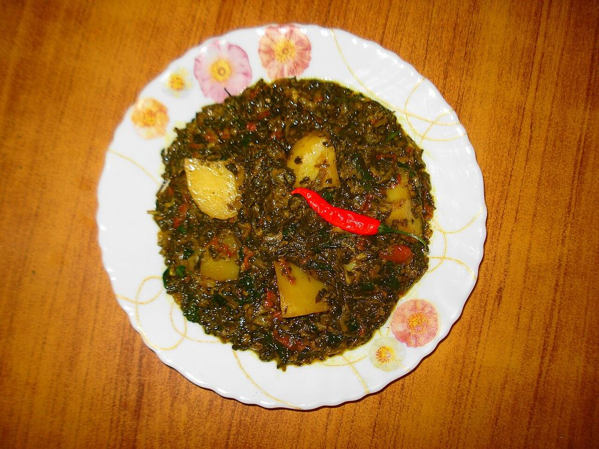

Aloo Methi
cubed potato and fresh fenugreek fried dry, bitter and sweet in the same mouthful

Allergens: none of the ten listed below
Checked against the ingredient list for ten allergens: milk, egg, fish, crustaceans, tree nuts, peanuts, sesame, mustard, soy and gluten. Brands vary, so read the label on anything new to you.
Ingredients
Quantities for 4.
- 300g, picked and washed Methi Leavesabout two large bunches, stems discarded
- 400g, cut into 1.5cm cubes Potato
- 1 medium, finely chopped Onionoptional
- 6 cloves, sliced Garlic
- 2, slit Green Chilli
- 4 tbsp Neutral Oilor mustard oil for a sharper version
- 1 tsp Cumin Seeds
- 1/2 tsp Turmeric
- 1 tsp Chilli Powder
- 1.5 tsp Coriander Powder
- 1 tsp Amchuroptional
- to taste Salt
Cookware
kadhai, stovetop
Before you start
- Pick the methi leaves off the stems, wash in three changes of water and drain thoroughly. Wet leaves steam the potatoes.
- Sprinkle the picked leaves with 1/2 tsp salt, rest 15 minutes and squeeze out the dark liquid if you want the bitterness tamed. Skip it if you like it bitter.
- Cut the potato cubes evenly so they finish at the same time. This dish is not covered or stirred much.
Method
- Heat the oil in a kadhai and crackle the cumin seeds for 15 seconds.
- Add the sliced garlic and fry 40 seconds until it just turns pale gold.Garlic browns in seconds here. Pull it back the moment it colours or it will taste burnt through the whole dish.
- Add the onion and green chilli and fry 4 minutes until soft and translucent.
- Tip in the potato cubes, turmeric and salt and toss to coat. Spread them into a single layer.
- Fry uncovered on medium for 10-12 minutes, turning only every 3 minutes, until the cubes are browned on several faces and nearly tender.Stirring constantly breaks the potato into mash. Leave it alone between turns.
- Add the chilli powder and coriander powder and toss for 1 minute.
- Add the methi leaves in handfuls, letting each batch wilt before the next goes in. This takes about 3 minutes.
- Raise the heat and stir-fry 5 minutes more until the leaves have darkened and the pan is dry, with no green liquid pooling.Fresh methi throws a lot of water. Cook it all off or the dish tastes washed out.
- Sprinkle over the amchur, toss once and take off the heat. Serve hot with phulka.
Storage
Keeps 2 days refrigerated. Reheat dry in a hot pan for 3-4 minutes; adding water turns it soggy. It does not freeze well.
Nutrition Good estimate
High protein: 20 g a serving, 17% of the calories
| Per serving227 g | Per 100 g | |
|---|---|---|
| Calories | 471 kcal | 208 kcal |
| Protein | 20.4 g | 9 g |
| Carbohydrate | 68.0 g | 30 g |
| of which sugars | 3.1 g | 1 g |
| Fibre | 21.8 g | 10 g |
| Fat | 19.1 g | 8 g |
| of which saturated | 2.6 g | 1 g |
| of which unsaturated | 12.0 g | 5 g |
Worked out from the listed quantities; most of the ingredient list could be weighed. Some ingredients have no exact match in the nutrient database and use the nearest equivalent: amchur, methi leaves. Estimated from raw ingredients using USDA FoodData Central. Cooking changes are not modelled, and added salt is excluded, so sodium is not given.
Written and checked against sources, not cooked in a test kitchen. Times, yields, allergens and nutrition are worked out rather than measured, so use your own judgement on doneness and on storing. More in About.